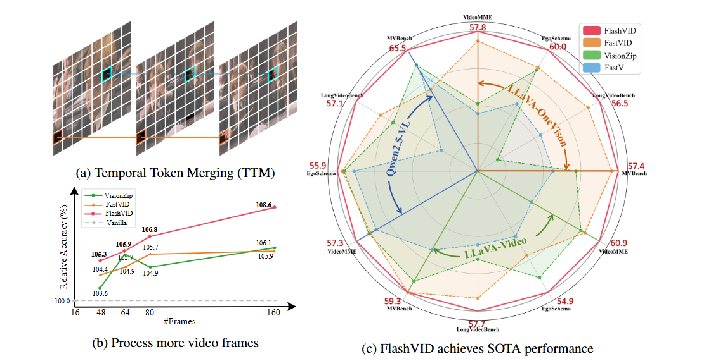

 FlashVID: Efficient Video Large Language Models via Training-free Tree-Based Spatiotemporal Token Merging Ziyang Fan, Keyu Chen, Ruilong Xing, Yulin Li, Li Jiang, Zhuotao Tian ICLR, 2026 Oral Paper Code Project
C2AD: Dual Consistency Learning for Zero-Shot Anomaly Detection Xiaoling Wang, Ruilong Xing, Zhuotao Tian, Yijun Liu, Senqiao Yang, Yaowei Wang, Jingyong Su ICASSP, 2025 Paper